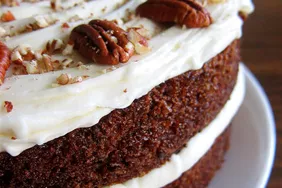

Cake

Description:
This carrot cake is my favorite recipe, and I have tried many carrot
cakes! If you don't like pecans, feel free to leave them out.
Ingredients:
- Sugar
- Eggs
- Oil
- Vanilla
- Flour
- Baking Soda and Baking Powder
- Cinnamon
- Salt
- Carrots
- Pecan
- Butter and Cream Cheese
Steps:
-
Make the batter: Beat the wet ingredients together,
then mix in the dry ingredients. Stir in the carrots and fold in the
pecans.
-
Bake the cake: Pour the batter into the prepared cake
pan or pans. Bake in the preheated oven until a toothpick comes out
clean.
-
Frost the cake: Beat the frosting ingredients together
until smooth and creamy. Stir in the pecans. Frost the (completely
cooled) cake.